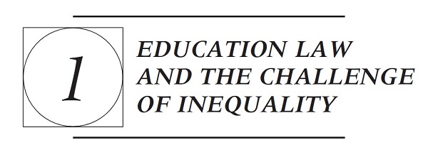
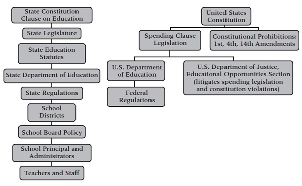
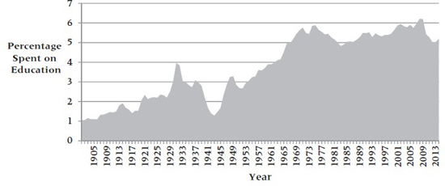

A. THE STRUCTURE AND HIERARCHY OF PUBLIC ELEMENTARY AND SECONDARY EDUCATION
Public school systems operate under a complex set of relationships between state, local, and federal governments. At the state level, state constitutions and statutes outline the broad contours of the public education system. At the local level, school board policies address those details that statutes leave open—primarily those matters pertaining to the day-to-day operations of schools. At the federal level, the Constitution makes no direct reference to education, implicitly recognizing that most educational authority resides with the states. In the absence of direct constitutional authority over education, the federal role is largely limited to Congress using its spending power to incentivize states to adopt federal education programs voluntarily. Schools, however, like any other public institution, are state actors and thus subject to the Constitution’s basic guarantee of individual rights, such as equal protection and free speech.
Given the complex set of laws and constitutions governing education, courts must also play a role in education. Neither state nor federal courts have any independent authority over schools, but litigants often call on courts to determine whether schools have violated their constitutional or statutory obligations. Consequently, courts play an important role in policing the boundaries of educational authority and obligation. Due to an “equality revolution” that began with Brown v. Board of Education in 1954 and a continual expansion of education statutes that followed, courts’ roles in policing these boundaries have increased significantly in recent decades. Before proceeding to case law, however, a basic understanding of the exact sources of educational authority and government is helpful.
1. State Educational Authority
Among all of the sources of educational authority and governance, state law is the most important. State law, not federal law, creates schools. Today, all 50 state constitutions include a clause that grants the state authority over public education and obligates it to provide it. William E. Thro, Note, To Render Them Safe: The Analysis of State Constitutional Provisions in Public School Finance Reform Litigation, 75 Va. L. Rev. 1639, 1661 (1989). Many of these clauses date back to the Civil War and Reconstruction, when state constitutions were undergoing change and education was among the pressing public needs for a modernizing country. See generally John C. Eastman, When Did Education Become a Civil Right? An Assessment of State Constitutional Provisions for Education 1776-1900, 42 Am. J. Legal Hist. 1 (1998). Some education clauses, like Massachusetts’, have an even longer history that dates back to the eighteenth century. Regardless, nearly all states’ education clauses have undergone revision at some point.
The most significant revisions occurred following the Civil War. As a condition for readmission into the Union, southern states were forced to amend their constitutions to comply with the Fourteenth Amendment. Derek W. Black, Education’s Elusive Future, Storied Past, and the Fundamental Inequity in Between, 46 Ga. L. Rev. 557, 575-576 (2012). In addition, newly freed slaves, recognizing the importance of education to social improvement, were instrumental in strengthening education clauses. In South Carolina, for instance, African Americans made up over half of the delegates to the state’s 1868 constitutional convention, who voted in favor of mandating public schools open to all. James Lowell Underwood, The Making of the South Carolina Constitution of 1868 in At Freedom’s Door: African American Founding Fathers and Lawyers in Reconstruction South Carolina 1-15 (Underwood & Lewis, eds. 2000). Unfortunately, segregation in schools and other aspects of public life became the norm as Reconstruction came to an end, and several constitutions came to reflect that reality. See, e.g., Miss. Const. of 1890, §207 (requiring segregated schools); Ala. Const. of 1901, §256 (requiring segregated schools). Those education clauses remained relatively static until the Supreme Court’s decision in 1954 in Brown v. Board of Education (striking down school segregation) and the Civil Rights Act of 1964 (prohibiting discrimination in schools receiving federal funds). Those two events forced another round of revisions to state constitutions to remove segregation mandates.
Today, the typical education clause simply indicates that the state must provide education. For instance, North Carolina’s constitution provides that “[t]he people have a right to the privilege of education, and it is the duty of the State to guard and maintain that right.” N.C. Const. art. I, §15. Many state constitutions also add some descriptor that defines the quality of that education. New Jersey’s constitution provides that “[t]he legislature shall provide for the maintenance and support of a thorough and efficient system of free public schools.…” N.J. Const. art. VIII, §IV. The language of “thorough and efficient” is the most common characterization, although other states, like Illinois, speak more obviously to quality, stating that “[t]he State shall provide for an efficient
system of high quality public educational institutions and services.” Ill. Const. of 1970, art. X, §1.
Acting pursuant to these constitutional grants of authority, legislatures have passed extensive statutory frameworks that cover a wide variety of topics. The most basic statutory requirements are those that compel children to attend school. These statutes do not, however, require that students attend a public school, only that they attend some school, typically from the age of 6 to 16 or 18. Failure to comply can result in fines and criminal prosecutions against parents and juvenile delinquency proceedings against students.
Other statutes create and structure the public school system itself. By statute, states create school districts, which then create the schools within them. That state statutes create school districts is important because they render school districts entirely a subsidiary of the legislature. As such, districts lack any claim to independent authority or existence beyond that which the legislature gives them, and states retain the power to curtail districts’ authority or eliminate them altogether.1
As a practical matter, however, states delegate an enormous amount of responsibility to school districts. State statutes typically outline the broad framework of education and leave the entirety of implementation specifics to districts. For instance, districts, rather than the state, make decisions as to where to build schools, where to provide bus transportation, how to assign students to schools and classes, which staff and administrators to hire and fire, which contractors to use as vendors, which students to suspend, and how to teach reading, writing, and math. States also delegate all-important taxing power to districts. As a result, the level of resources available for education in any given school district is often more a function of local discretion than state policy.
While states continue to delegate enormous authority to districts, states have increasingly reclaimed some of their authority over education in recent decades. In particular, states have limited their delegation in regard to curriculum, standardized testing, and student discipline. States, for a long time, have proscribed a standard core course of study, particularly at the high school level, where students might be required to take four years of English and three years of math. But this general mandate does not specify exactly what competencies students should gain or what must be taught in Algebra II or World History, for instance. In elementary and middle schools, many states mandated almost nothing in regard to the course of study. As a result, school districts and teachers varied significantly in how and what they taught. States have not eliminated local discretion, but in recent decades—as a response to both federal financial incentives and state-based litigation over school quality—most states have standardized the curriculum and dictated precise learning objects and content for each grade level and course. In 2006, for instance, the North Carolina Department of Public Instruction mandated that schools center the curriculum for U.S. History around 12 major competencies and 54 different learning objectives. North Carolina Standard Course of Study, United States History (2006), available
at http://www.dpi.state.nc.us/curriculum/socialstudies/scos/2003-04/067eleventhgrade. North Carolina did the same and more in other courses and grades. By 2015, state curricula grew even more specific, as more than 40 states adopted a common core curriculum pegged to college and career-ready learning standards. The standardization of curriculum also brought changes in testing. With a standardized curriculum, states were in a better position to assess what students were learning. State statutes now require their departments of education to develop, and school districts to administer, standardized tests that attempt to measure the extent to which students are proficient in the state’s curriculum. Some states have gone one step further and attached consequences to a student’s lack of proficiency, conditioning promotion from one grade to the next and, ultimately, high school graduation on a student’s ability to meet certain benchmarks on state exams. Likewise, in many states, how a teacher’s students perform on standardized tests now plays a significant role in personnel decisions, including hiring, firing, and tenure.
Certain aspects of school discipline have also become more systemized. Now, state statutes typically require school districts to expel or suspend students who bring alcohol, drugs, or weapons to school. Some states even attach consequences to less serious behavior. A Mississippi statute, for instance, labels students who engage in disruptive behavior three times as “habitually disruptive” and makes habitually disruptive students who engage in additional instances of disruption subject to expulsion. Miss. Code Ann. §37-11-18.1 (2010). State statutes also frequently dictate the process by which a school, regardless of the underlying behavior, excludes a student from school. These statutes detail the type of notice a student should receive prior to suspension, whether a student has a right to appeal a suspension, any conditions for readmission, and whether any educational services must be provided during the period of suspension.
The final major category of state education statutes relates to the administrative agencies responsible for overseeing education. The exact title and structure of the agency varies among states. Some states create a state board of education and an office of the state superintendent, whereas others create a state department of education, department of public instruction, or commission on education. Regardless of the name, state education agencies play several important roles in education. The state agency is the primary entity responsible for developing and enforcing the details of a state’s education policy. Many of the statutes described above state only the broad goals of disciplinary, curricular, or testing policy. Where this is the case, the statutes typically direct the state agency to provide greater specificity or to assist districts in implementing the state’s goals.
For instance, many state statutes identify the core courses schools should offer and the substantive competencies that students should develop across their educational careers. States sometimes add a qualitative component and specify that all students should obtain the knowledge and skills in social studies, math, English, and science necessary to become productive citizens, pursue higher education, or succeed in the workforce. The state education agency would then be responsible for identifying the specific learning objectives for each
course that would allow students to meet these goals. Like federal agencies, state agencies achieve these ends by enacting regulations, drafting guidance documents, and offering districts technical assistance.
Beyond the responsibility for assisting districts in complying with regulations, laws, and policies, many state educational agencies also play enforcement and adjudicative roles. State departments of education can be responsible for identifying noncompliance by districts or investigating claims that private parties bring to the agency’s attention. If the agency finds a violation, the agency may have the power or obligation to take action against the school district. The most common instances where this arises are in regard to a district’s failure to make sufficient progress on state standardized tests, the misallocation of funds, or the failure to implement the systems and protocol necessary to deliver specialized services to students with learning disabilities, English Language Learners (ELLs), or homeless students. State education agencies can also play an adjudicative role in regard to student rights. In some states, students can appeal suspensions, expulsions, and special education determinations to the state agency, which has the authority to render a final decision.
2. Local Educational Authority: School Districts
Although state statutes and agency regulations are extensive, the most they can do is structure the delivery and objectives of education; they cannot deliver education. The actual delivery of education requires someone to make multiple practical and implementation decisions and carry them out at the school level. The bulk of these decisions are left to the discretion of school districts. Thus, while statutes may set clear outer limits on districts’ powers, school districts exercise an enormous amount of power within their own domains. In fact, each school board or district adopts its own unique policies and procedures. These local rules and policies focus on a common set of issues: (1) school board self-governance, including internal voting procedures, public meeting procedures, board member compensation, and board member conflicts of interest; (2) hiring and firing a superintendent, and the scope of the superintendent’s authority; (3) the budgeting and fiscal policies to which the school district will adhere, including the rules it will follow for the procurement of goods and services; (4) practical business operations, including school security, bus transportation, food service, facilities maintenance and construction, and vehicle use; (5) human personnel rules for teachers and staff; (6) a detailed instructional program, along with policies regarding home schooling, summer school, vocational education, extracurricular activities, special education, preschool, and advanced placement programs; and (7) student rights, including the basis and procedures for excluding students from school for disciplinary reasons. In addition to any board policies in regard to students, districts often permit or require schools to adopt student handbooks and distribute them to students. These handbooks tend to be written for students rather than adults. The goal is to make them easy to comprehend and to put students on notice of the particular types of behavior that can lead to punishment.
3. State Courts
At the state and local levels, courts also play a role in shaping the laws applicable to schools. Courts’ role has traditionally been relatively limited, given that their task most often has been confined to interpreting and applying the state’s education statutes. The education cases that come before the state courts tend to implicate one of two issues: (1) the meaning of statutes’ broadly phrased educational standards, or (2) the boundaries of state, local district, and local personnel’s authority. On select occasions, litigants ask courts to interpret the state constitution. In these cases, the importance of courts is at its height.
For the most part, the various stakeholders in the educational system work in sufficient concert that serious conflicts do not arise or turn into lawsuits. But occasionally, someone charges that one of the levels of educational governance has exceeded or been derelict in its authority. For instance, a school district might assert that the state has failed to provide sufficient financial support to implement the curricular program in its district or that the state has inappropriately authorized a charter school in its district. Students also may charge that a district has inappropriately expelled them or deprived them of some educational opportunity to which they are entitled. When relevant statutes are in place, courts are well suited to resolve these disputes.
The traditionally limited role of courts in education policy, however, is undergoing change. First, the expanding statutory and regulatory framework governing schools opens the door to greater court involvement. Courts now have standards on which to base a decision without substituting their own judgment for that of legislators or educators. Second, over the past three decades, courts have been more willing to recognize the constitutional dimensions of educational claims, particularly in regard to school finance and quality. In these cases, courts become a major player in the outcome of statewide educational policy. The increasing role of courts in educational policy, however, raises questions of judicial competence and authority. Courts remain, and likely always will be, reluctant participants in education policy. Judges are quick to emphasize that practical educational decisions are best made by educators and educational policies by legislatures, not courts.
4. Federal Educational Authority
The U.S. Constitution does not provide for any direct federal involvement in education. Because the federal government is one comprised solely of enumerated powers, the absence of a grant of educational authority in the Constitution means that the federal government lacks the authority to unilaterally regulate or structure education. Consequently, prior to the 1950s and 1960s, the federal government played almost no role in education. Since then, however, the importance of federal law to education has increased dramatically due to two developments: (1) the judicial recognition that constitutional rights extend to students as well as adults, and (2) Congress’s use of its spending power to entice states to voluntarily adopt federal education policies.
While the federal Constitution says nothing of what an educational system should look like or whether public schools should even exist, once a state establishes an educational system, the state must administer that system in a manner that is consistent with individual constitutional rights. In particular, the state cannot violate students’ rights to equal protection, free speech, freedom of religion, due process, and freedom from unreasonable searches and seizures. Thus, if the state, for instance, implements its educational program in a way that treats students differently based on race or gender, equal protection would apply. Likewise, once a state creates schools and gives students the right to attend them, due process protections apply, and the state cannot arbitrarily take educational rights away or suspend students without following certain procedures. But so long as the state does not infringe students’ constitutional rights, the Constitution does not speak to how schools should carry out their duties.
Over the past half century, students have increasingly called on federal courts to protect their rights. Public schools are not islands unto themselves and are often plagued by larger societal ills. Race segregation, gender segregation, stereotyping, arbitrary state action, denials of state benefits, religious proselytizing, and suppression of unwanted speech have all made their way into our public schools. In all of these areas, federal courts—albeit hesitantly—have intervened.
The most significant federal incursion in education, however, is one that states have voluntarily accepted. Starting in the 1960s, Congress expressed two major interests in becoming involved in education: speeding up the school desegregation that the courts were overseeing and using education as a tool in the fight against poverty. In furtherance of both goals, Congress enacted the Elementary and Secondary Education Act of 1965 (ESEA). It has reauthorized the ESEA several times since, popularly titling the 2002 reauthorization bill as the No Child Left Behind Act. In 2015, the ESEA was most recently reauthorized and amended by the Every Student Succeeds Act. The ESEA is spending legislation, which means that Congress offers states and schools money in exchange for compliance with various conditions. The initial amount of money was meager and conditions that accompanied them minimal, but Congress expanded both in following reauthorizations. As a result, the federal role in education went from being nearly nonexistent to significant. In fact, the federal role grew so significant in the No Child Left Behind era that the Every Student Succeeds Act specifically limited the federal role in certain respects.
As the following chapters will explore in depth, Congress’s spending legislation became the basis for it to shape educational policy in regard to various subpopulations of students. Primarily as subsections of later reauthorizations of the ESEA, Congress has enacted Title I of the ESEA (addressing the resource needs of low-income students), the McKinney-Vento Homeless Assistance Act, the Individuals with Disabilities in Education Act, and the Safe and Drug-Free Schools and Communities Act. Congress has also enacted general antidiscrimination statutes that apply to any school receiving federal funds under these or other federal programs. Most notable are Title VI of the Civil Rights Act of 1964, which prohibits race discrimination in federally funded programs, and Title IX of the Education Amendments of 1972, which prohibits gender discrimination in
federally funded programs. Through these various pieces of funding legislation, the federal government now exercises significant regulatory control over public schools.
Until 1979, the federal education programs and antidiscrimination statutes were administered through the Department of Health, Education, and Welfare. Prior to 1979, numerous attempts had been made to create a federal agency devoted entirely to education, but all had failed. The opposition then and now grows out of the sentiment that the federal government has no appropriate role to play in general educational policy. In the 1976 presidential election, the National Education Association (NEA)—a teachers’ labor organization and the nation’s largest professional employment organization—put its support behind a presidential candidate—Jimmy Carter—for the first time in its history. Through this endorsement, the NEA was able to secure a campaign promise from Jimmy Carter to create a department of education. President Carter fulfilled that promise in 1980, creating the U.S. Department of Education.2
The Department of Education has grown since then and now has various different specialized subdivisions responsible for administering and regulating each of the federal statutes pertaining to education. For the purposes of this casebook, one of the most important divisions within the Department of Education is the Office for Civil Rights (OCR). The OCR is primarily an enforcement
division that investigates individual and systemic complaints of discrimination based on race, ethnicity, gender, disability, and language status. Upon finding a violation, the OCR has the authority to initiate proceedings to terminate the relevant school district or state’s federal funding, although only on the rarest of occasions has the OCR taken such steps. The mere threat of funding loss is sufficient to prompt all but the most recalcitrant districts to agree to corrective action. Notwithstanding its power, the OCR prefers to avoid enforcement actions altogether and thus devotes significant resources to providing districts with policy guidance to help them maintain compliance with the law in the first instance. Other important equality-focused divisions within the Department of Education include the Office of Special Education and Rehabilitative Services and the Office of English Language Acquisition, Language Enhancement and Academic Achievement for Limited English Proficient Students, although these offices primarily play a policy role. Figure 1-1 offers a graphical view of the collective structure and legal authority for the various state and federal actors. The figure does not include state and federal courts, which have the authority to review the actions of all of these parties and sources of law.
Figure 1-1.
Structure and Source of Educational Authority

PROBLEM
Identify and read the statutes in your state that address public elementary and secondary education. How do these statutes allocate educational authority between the state and local districts? Pay close attention to what state agencies and actors are responsible for monitoring local districts, what level of discretion or direction they provide to districts, how much authority the state asserts over curriculum, and what types of accountability measures are in place. Consider whether the balance your state strikes between the state and local districts promotes or undermines educational quality and equity across districts. Also, identify any statutes that guarantee student rights. Does the prevalence or absence of rights surprise you? Identify any statutes that set teacher quality standards and provide teachers with particular rights. Are the statutes sufficient to ensure teacher quality?
B. THE PRACTICE OF EDUCATION LAW
As the foregoing overview suggests, education law is expansive and involves attorneys representing several different clients—the federal government, states, school districts, teachers, and students—and at several different levels. In this respect, education law is a large but extremely decentralized area of law. While important policy and litigation happens at the national level, and certainly at the state level, just as much education law happens at the local level through our nation’s 10,000 school districts. Given the local nature of education, large law firms in major legal markets are not necessarily as well suited to do work for the
educational industry as they are for other major industries, although some major law firms maintain practice groups that focus on a few highly specialized education law issues.
At the national level, education law is primarily practiced through education reform advocates, civil rights advocates, nonprofit organizations, research centers, specialized education practices in a few major law firms, lobbyists, the U.S. Department of Justice, the U.S. Department of Education, and various associations that represent school boards or teachers, such as the NEA and the National School Boards Association. At the state level, education law is practiced through 50 different state departments of education, state teachers’ associations, state school board associations, local nonprofit organizations, and law firms specializing in education law. At the local level, large school districts may have their own general counsel’s office, while smaller districts tend to seek legal representation from a variety of sources. A small school district might contact the state department of education on issues relating to accountability systems and program implementation; the state school board association’s legal counsel for general advice on a variety of topics; regional or local labor law firms for personnel issues; local general practitioners for tort, contract, and property issues; and large law firms with specialized practices in education for unique issues that arise only infrequently. At the local level, families also call on legal aid offices, nonprofit organizations, and private attorneys to represent their children when they believe schools have violated their rights.
C. THE IMPORTANCE AND CHALLENGE OF EQUALITY IN EDUCATION LAW
Covering the entirety of the law on which the varied educational practitioners rely would consume two, if not three, casebooks. The legal issues relating to the basics of running a school district—which include tort liability, contractual relations with teachers, property management and expenditures, and school board practices—are worthy of their own casebook, and a few out there focus primarily on these issues. The legal issues surrounding free speech, free exercise of religion, the Establishment Clause, and the general rights of students, likewise, offer enough substance to fill most of a casebook. Finally, an entire casebook could be devoted to the law of educational equality for disadvantaged students.
This book attempts to take the best of the second and third approaches, placing the heaviest weight on the law of educational equality and students’ rights. To that mix, this casebook adds three final chapters that address recent federal education reforms, the rise of charter schools and vouchers, and teacher quality and rights, all of which directly intersect with educational equality. This casebook takes this approach because it reflects the changing reality and challenges of modern education law. Three major themes capture the past half
century of education law: extending basic constitutional rights to students, policing the separation of church and state, and eliminating inequalities in educational opportunity.
Starting in the late 1960s, the U.S. Supreme Court began to hold that basic constitutional rights—including free speech, due process, and protections against unreasonable searches and seizures—apply to public school students while they are at school. That the law entitles students to basic constitutional rights no longer creates serious controversy, but the implementation of these rights creates continuing tension in the everyday delivery of education. For instance, schools know they must respect students’ privacy interests in performing searches for contraband and must afford students process before suspending them, but schools’ interests in keeping schools free of drugs and weapons and promptly removing students who may pose a risk to other students can create incentives for schools to push to—if not cross—the outer boundaries of their authority. Analogous tensions arise between schools’ duty to respect students’ free speech rights and schools’ desire to avoid controversy and disruption in school.
The role of religion in public schools has also generated controversy. In 1962, the Supreme Court held that the Establishment Clause prohibited school-sponsored prayer, and the Court has repeatedly indicated that public schools must take particular care to avoid the appearance of promoting religion to impressionable students. In recent years, however, the Court has also held that voucher programs for parochial education do not necessarily violate the Establishment Clause, and that free exercise and free speech principles can require schools to treat religious speech just as they would any other speech. Today, while the broad outlines of what schools can and cannot do vis-à-vis religion are clear, difficult borderline questions continue to arise. Moreover, cases involving prohibited activity continue to make their way into the courts, as various constituencies insist that schools are appropriate places to inculcate religious and moral values.
The most significant changes and challenges in modern education, however, relate to education inequality. In fact, the extent of inequality and the amount of effort exerted—insufficient as it may be—dwarfs any other educational issue in our history. Even today, delivering equal educational opportunities remains the central challenge of public education. See generally Linda Darling-Hammond, The Flat World and Education: How America’s Commitment to Equity Will Determine Our Future (2010). A brief primer on our past history and the difficulty in extricating ourselves from it brings the gravity of today’s inequalities into sharp focus. Too often over the course of educational history, inequality of educational opportunity has been the rule, not the exception. In particular, racial minorities, poor students, ELL students, students with disabilities, and females have all faced serious disadvantages. In fact, until the late 1960s and early 1970s, most of these disadvantaged groups were segregated, offered inferior educational opportunities, or excluded from the educational process altogether.
The most extreme and systematic disadvantages have been aimed at African Americans. Prior to the Civil War, African Americans were, in most
instances, entirely denied access to education. In the South, it was a crime even to teach African Americans to read. During the post-Civil War period, educational opportunities for African Americans rapidly expanded, largely as a result of federal programs through the Freedman’s Bureau and African Americans’ newfound power to influence state legislation. Derek W. Black, Education’s Elusive Future, Storied Past, and the Fundamental Inequity in Between, 46 Ga. L. Rev. 557, 573-576 (2012). But once Reconstruction ended in 1877, states sharply restricted African Americans’ opportunities again. From then until the latter half of the twentieth century, African Americans (and other minorities) were forced to attend segregated and unequal educational facilities in elementary and secondary schools. Richard Kluger, Simple Justice: The History of Brown v. Board of Education and Black America’s Struggle for Equality 256-257 (1975). In higher education, many states denied them opportunity altogether. To pursue higher education, minority students were often forced to attend private institutions or leave their home states. Id. Of course, such explicitly discriminatory practices are no longer legal, but the depth of the inequality that these practices created has made reversing the effects a continuing struggle. After a promising period of increasing integration between the mid-1960s and mid-1980s, our schools began to resegregate and have continued to do so. As a result, the level of segregation in today’s schools is as high as it was 40 years ago. Gary Orfield & Chungmei Lee, The Civil Rights Project, Brown at 50: King’s Dream or Plessy’s Nightmare? 19 tbl.7 (2004). Likewise, shrinking racial achievement gaps accompanied initial successes in integrating schools, but those gaps never closed completely and have remained persistently large in recent decades.
Closely related to racial segregation is segregation and discrimination based on ethnicity, which school districts primarily aimed at Latino students. Particularly in the southwestern United States, school districts used language differences as a pretext for segregating Latino students into separate schools and classrooms. See, e.g., Mendez v. Westminister Sch. Dist. of Orange Cnty., 64 F. Supp. 544 (S.D. Cal. 1946). Racial desegregation law was equally applicable to this type of segregation, but was not always sufficient to address the language barriers that many ethnic minorities faced in school. Changing immigration patterns in recent decades have made delivering education to ELL students a national, rather than regional, challenge. At times, schools have refused to offer any sort of accommodation or specialized instruction to ELL students. Even worse, recognizing the potential financial burden of appropriately serving these children, some states and schools have gone so far as to attempt to bar some ELL students from school altogether based on their residency status. See, e.g., Plyler v. Doe, 457 U.S. 202 (1982). While attempts of this sort are rarer today, they still occur. See, e.g., Lawmakers to Debate Education for Illegals, Augusta Chron., Dec. 29, 2005, at B5.
Overlapping with issues of race, ethnicity, and language status is the problem of poverty. More than 60 percent of African
American and Latino students attend schools where the majority of students in the school are poor. NAACP Legal Def. & Educ. Fund, Inc. & Civ. Rts. Project, Still Looking to the Future: Voluntary K-12 School Integration 14-15 (2008). Likewise, in our nation’s highest poverty schools, 80 percent of the students are African American and Latino. Id. Thus, African American and Latino students attend schools that are both racially and socioeconomically segregated.
Whether intentional or not, high poverty concentrations have a devastating effect on the quality of education that students receive. High-poverty schools generally deliver lower-quality curriculum, have lower-quality teachers, have higher teacher turnover, produce lower student achievement scores and graduation rates, and limit students’ access to later employment and higher education opportunities. See, e.g., Susanna Loeb & Michelle Reininger, Public Policy and Teacher Labor Markets: What We Know and Why It Matters (2004); NAACP Legal Def. & Educ. Fund, supra, at 21; U.S. Dep’t of Health, Educ. & Welfare, Equality of Educational Opportunity 302-310 (1966); Jeannie Oakes, Adam Gamoran & Reba N. Page, Curriculum Differentiation: Opportunities, Outcomes, and Meanings, in Handbook of Research on Curriculum 570-608 (Philip W. Jackson ed., 1992); Derek Black, The Case for the New Compelling Government Interest: Improving Educational Outcomes, 80 N.C. L. Rev. 923, 953 (2001). Moreover, students suffer these negative effects regardless of their personal race or wealth. Richard D. Kahlenberg, All Together Now 47-76 (2001). Rural white students, like minority students, often face serious educational inadequacies as well. In short, a major determinate of the quality of education a student receives is the wealth of the students with whom he or she goes to school.
A second major determinate in the quality of education a student receives appears to be the level of resources available in a student’s school.3 Fortunately, as Figure 1-2 reveals, education expenditures have increased dramatically over
the past century. But during that same period, dramatic demographic changes have occurred that have also increased the cost of delivering education. First, compulsory education through children’s mid-teenage years is now the national norm. In the early 1900s, the country was still transitioning out of an agrarian culture in many localities. A large percentage of students attended school for only a few months a year and terminated their education altogether long before completing high school. In 1910, a mere 6 percent of the population had completed high school. Victoria J. Dodd, Practical Education Law for the Twenty-First Century 9 (2003). Thus, increased school funding is partially attributable to the fact that we now educate many more students for many more years than we ever did before.
Figure 1-2.
Education Spending as a Percentage of Total National Gross Domestic Product4

Second, while increases in educational expenditures occurred throughout the nation, the amount of increase differed significantly across regions. As a result, significant increases in inequality between districts and states accompanied the general national increase in spending. By the 1970s in Texas, for instance, some school districts were spending twice as much per pupil as other districts just a few miles away. See, e.g., San Antonio Indep. Sch. Dist. v. Rodriguez, 411 U.S. 1 (1973). Moreover, state policy often exacerbated, rather than mitigated, inequalities. Again, in Texas, the responsibility for financing education fell largely on local districts, which seriously disadvantages property-poor districts. The state made matters worse by allotting more state funds to the wealthiest district than it did the poorest. Id. at 13-14. Similar disparities also exist between states, which the federal government tends to make worse by giving the largest education grants to the wealthiest states. Derek W. Black, The Congressional Failure to Enforce Equal Protection through the Elementary and Secondary Education Act, 90 B.U. L. Rev. 313, 348-352 (2010). For instance, even though Arkansas is a poor state with nearly ten times as many poor children as New Hampshire, the federal government’s funding formulas provide more than twice as much financial support per pupil to New Hampshire’s schools. Goodwin Liu, How the Federal Government Makes Rich States Richer, in Funding Gaps 2006, at 3 (Educ. Trust 2006).
Litigation and conscientious legislation, particularly in the 1990s and early 2000s, have improved matters in some states, but patterns of school funding inequality remain largely untouched in about half of the states and are so entrenched in other states that full remedies can require decades of effort. The state of New York in 2004—a time during which it was purportedly reforming its school funding—was spending $2,000 more per student in schools that served predominantly middle- and high-income students than it was in schools that served predominantly low-income students. Ross Wiener & Eli Pristoop, How States Shortchange the Districts That Need the Most Help, in Funding Gaps, supra, at 7 tbl.4. New York was not alone. That year, the average national funding gap between schools serving predominantly high-poverty students and schools serving predominantly middle-income students was $1,307 per pupil. Id. In an average elementary school of 400 students, this per-pupil disparity meant that a school serving predominantly poor students would receive half a million dollars less than a school serving predominantly middle- and high-income students.
Finally, due to statutory protections designed to prevent schools from excluding certain “undesirable” students, public schools now educate higher numbers of disabled, poor, homeless, and language minority students than before. Adequately educating these students costs more per pupil than educating nondisabled middle-class students. Thus, basic increases in today’s educational spending in comparison to the first half of the twentieth century do not automatically mean that schools have more resources to do the same job they were previously doing. Rather, schools’ job today is more challenging and resource intensive than it previously was. Making matters worse is the fact that the task of educating high-need students has not fallen evenly on all schools. Some schools educate almost entirely high-need populations while others educate almost none. Research further indicates that as the concentration of high-need students in a school increases so does the funding need per pupil. See Black, Congressional Failure, supra, at 344 (analyzing research). Thus, schools serving disproportionate shares of high-need students need more, not fewer, resources than other schools. In short, the rising number of students in general, coupled with the greater inclusion of needy students, necessarily required increased educational spending over the past half century. The difficult questions, which later chapters take up, are the extent to which the increases have been sufficient and, if not, the role courts should play in implementing a remedy.
The greatest beneficiaries of more inclusionary schools may be students with disabilities. Well into the 1970s, the standard practice in many school districts was to exclude students with disabilities from public school. Their rationale was that disabled students were incapable of learning or, slightly less perniciously, that schools were financially incapable of providing for them. Of course, both rationales were false, but unless their parents could provide education privately or the student had the grit to self-educate, students with disabilities received little, if any, education. For the most part, students with disabilities today do not face problems with basic access to school. Rather, the problem has morphed from one of school inclusion into one of access to appropriate opportunities once enrolled in school. Most students with a disability require some form of special education or accommodation. The challenge can be finding an individualized education program that works and getting the school to provide it.
None of the foregoing, however, is meant to suggest our schools have not made important strides in offering equal educational opportunities. Nothing could be further from the truth. The equality movement in gender, for instance, has been extremely successful. Education is now delivered primarily in coeducational environments; females and males generally take the same courses; females generally score as high—if not higher—than males on standardized exams; females’ participation in sports steadily increases each year; and females attain college degrees at a higher rate than males in many instances. Yet, with all these gains, the quest for gender equality in education is not complete. Females are still subject to sexual harassment, gender bias, and unequal opportunities in education, and therein lies the point. No matter how much progress has been made in any single area, the depth and extent of inequality for all of our disadvantaged students was so great that overcoming it has unfortunately
been the task of a lifetime, not just a few short years or decades. Most of this casebook is devoted to offering a greater understanding of the law’s successes and failures in addressing these challenges.
PROBLEM
The phrase “equality of educational opportunity” appears simple on its face, but the phrase is not self-defining and can be extremely complex in application. A key question throughout the first seven chapters of this casebook is the meaning of equality of educational opportunity. Both readers and courts will struggle with their understanding of the concept. Equality of educational opportunity could mean something as basic as ensuring that all students have an equal opportunity to attend school or something as demanding as recognizing that students have various different needs and equal opportunity to master a school’s curriculum requires schools to provide differential resources and educational experiences to students. For instance, students’ disability or language status, among other characteristics like poverty and homelessness, may immediately place them at a disadvantage in a curriculum designed for the “average” student. Thus, the academic success of students with a disability or language barrier is, in part, dependent on a school responding directly to their specific needs with supplemental or individualized learning opportunities.
Courts’ answers to this question have varied across time and equality paradigms. What do you think “equality of educational opportunity” means as a matter of law? What does it mean as a matter of good policy? Are the two different? Related to this last question is the dilemma of who should make educational judgments: courts, schools, or parents. Schools and parents have an obvious role to play, but what, if any, role should courts play in educational policy and practice? To what extent should courts override the judgment of schools and parents?
1 A few state constitutions, however, directly grant authority to districts and thus are exceptions to this general rule. See, e.g., Colo. Const. art. IX, §2.
2 As you examine the materials in this casebook, the transition of responsibility for education programs from the Department of Health, Education, and Welfare to the Department of Education will make sense of why, for instance, race and gender discrimination cases and articles from the 1960s and 1970s reference the former agency and the newer cases and articles reference the Department of Education.
3 The full debate on the extent to which money matters in school quality is reserved for Chapter 3.
4 This chart is derived from data available at http://www.usgovernmentspending.com. The data includes spending on higher education. In the early 1900s, higher education spending accounted for less than 5 percent of total education spending. In the 1960s, that changed. Higher education now accounts for about 30 percent of educational expenditures, though much of that is financed by tuition.